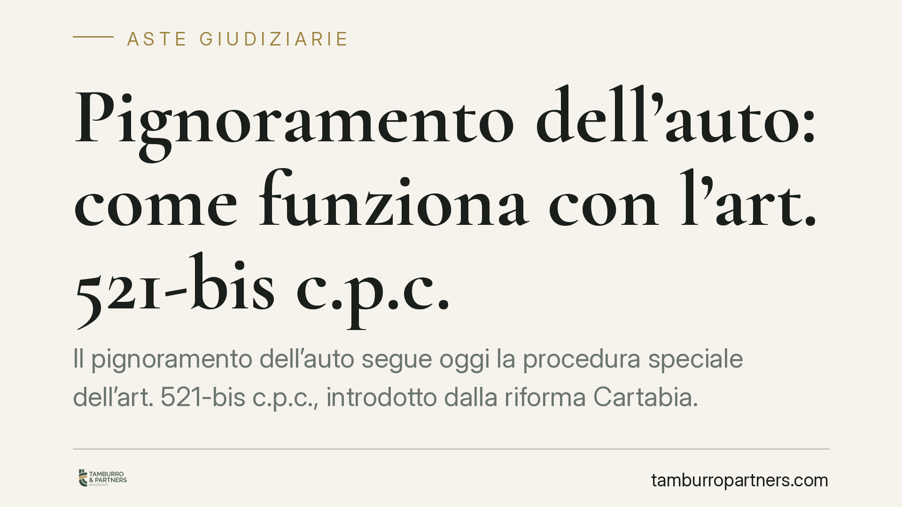

Pignoramento dell'auto: come funziona con l'art. 521-bis c.p.c.
Il pignoramento dell'auto segue oggi la procedura speciale dell'art. 521-bis c.p.c., introdotto dalla riforma Cartabia. Il debitore riceve l'invito a consegnare il veicolo entro il termine di legge; in mancanza, interviene la forza pubblica su richiesta dell'ufficiale giudiziario. Capire tempi, effetti e limiti è essenziale per non aggravare la propria posizione.

Il quadro normativo
Il pignoramento dei beni mobili registrati — auto, moto, autocarri, rimorchi — è disciplinato dall'art. 521-bis del codice di procedura civile. La norma è stata introdotta dal D.Lgs. 149/2022, la cosiddetta riforma Cartabia, che ha razionalizzato la materia sostituendo il vecchio pignoramento presso il debitore con una procedura più snella basata sui registri pubblici.
La logica è chiara: invece di rintracciare fisicamente il mezzo, l'atto si perfeziona con la notifica al debitore. Contestualmente, il creditore fa trascrivere il pignoramento presso il Pubblico Registro Automobilistico (PRA). Questo doppio passaggio va tenuto distinto, perché produce effetti diversi.
Perfezionamento e opponibilità: due momenti distinti
Il pignoramento si perfeziona con la notifica dell'atto al debitore. Da quel momento scattano gli obblighi a suo carico. L'opponibilità ai terzi, invece, dipende dalla trascrizione al PRA: solo con l'iscrizione nel registro il vincolo diventa efficace verso chi eventualmente acquistasse il veicolo.
È una differenza pratica rilevante. Un debitore che, dopo la notifica, cedesse l'auto compirebbe un atto colpito dall'art. 2913 del codice civile, che sancisce l'inefficacia relativa degli atti di disposizione del bene pignorato: la vendita non è nulla in assoluto, ma non produce effetti nei confronti del creditore procedente, che può comunque aggredire il mezzo.
La consegna del veicolo
Con l'atto notificato, il debitore è invitato a consegnare il veicolo entro il termine indicato dalla norma. La consegna avviene all'Istituto Vendite Giudiziarie (IVG) o al soggetto individuato per la custodia e la successiva vendita.
Se il debitore non ottempera, l'art. 521-bis c.p.c. prevede che l'ufficiale giudiziario proceda alla ricerca del bene, anche tramite le banche dati pubbliche, avvalendosi ove necessario dell'ausilio della forza pubblica per l'apprensione materiale del veicolo, che viene quindi affidato all'IVG. Non si tratta di un generico "fermo su strada": è un'attività coordinata dall'organo esecutivo, finalizzata a consegnare il mezzo al custode giudiziario.
Limiti di pignorabilità
Non ogni veicolo è aggredibile senza limiti. Quando l'auto o il mezzo sono strumentali all'esercizio dell'attività lavorativa o professionale del debitore, possono operare le tutele previste dall'ordinamento sui beni indispensabili al lavoro.
La valutazione è concreta: occorre dimostrare il nesso funzionale tra il veicolo e l'attività (ad esempio il furgone di un artigiano o l'auto di chi svolge trasporto professionale). La qualifica di bene strumentale non è automatica e va supportata da elementi documentali.
Implicazioni pratiche
Per il debitore, la notifica del pignoramento segna un punto di non ritorno: da quel momento ogni atto dispositivo sul veicolo rischia di essere inefficace verso il creditore e, in alcuni casi, di esporre a conseguenze ulteriori. Ignorare l'atto o ritardare la consegna non blocca la procedura: la sposta soltanto verso l'apprensione forzata.
Per il creditore, la trascrizione tempestiva al PRA è la mossa che cristallizza il vincolo e neutralizza eventuali cessioni successive.
Cosa fare in concreto
- Leggi con attenzione l'atto notificato: individua il termine di consegna indicato e il soggetto a cui consegnare il veicolo.
- Non disporre del mezzo dopo la notifica: vendite o intestazioni fittizie sono inefficaci ex art. 2913 c.c. e possono aggravare la tua posizione.
- Verifica la trascrizione al PRA per conoscere l'esatta estensione del vincolo e la sua data.
- Documenta l'eventuale natura strumentale del veicolo, se lo usi per lavoro, raccogliendo prove del nesso con l'attività.
- Valuta subito le difese esecutive disponibili (opposizione, istanze di conversione o riduzione) rivolgendoti a un professionista prima che scadano i termini.
---
_Contributo informativo a cura di Tamburro & Partners - Avv. Giuseppe Tamburro. Non costituisce parere legale._
Comprare bene all’asta si può.
Se vuoi acquistare un immobile all’asta in sicurezza o difendere un esecutato, scrivi allo studio. Ti rispondiamo entro un giorno lavorativo.